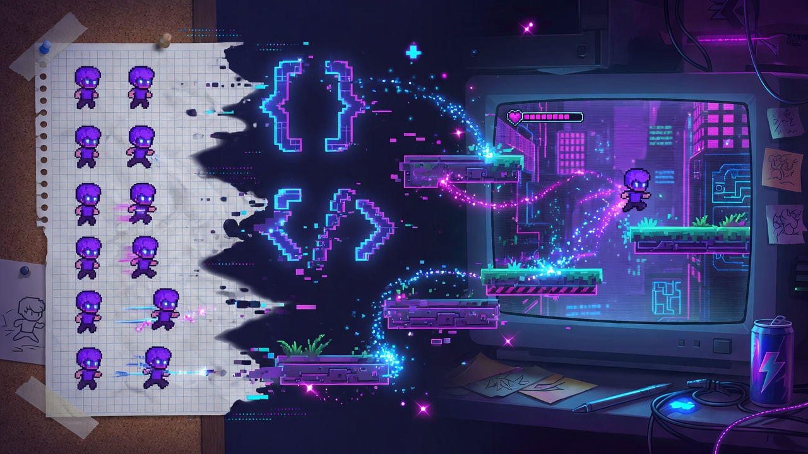
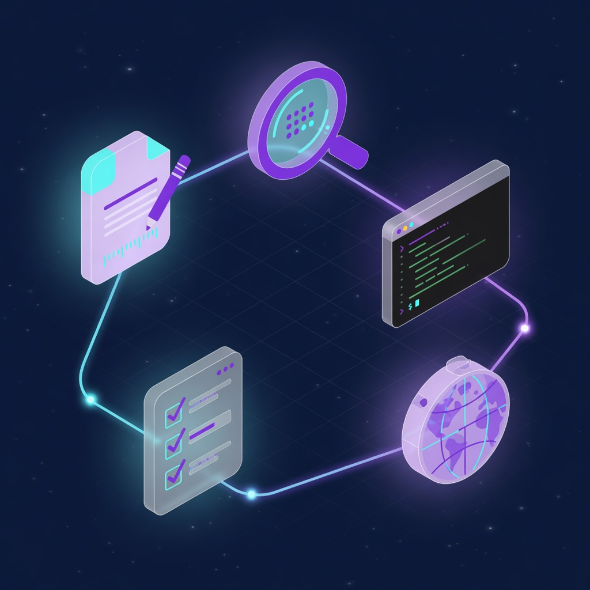

First game: Star Clicker Arena
WASD move, one enemy, Space attack, win/lose, restart. Opens as index.html—no game engine.
Learn Grok Build in the terminal—then ship a tiny game or app with copy-paste prompts.
Start here — install Grok Build
One next step. Progress stays in this browser only.
Opening a page is opened, not complete—mark done after the lab. First win: install works, then a First Ship walkthrough.
Install Grok, then finish a First Ship walkthrough before Advanced. One map below—open the lesson list only when you want every title.
Still ship-first. Install → First Session → First Game walkthrough (or the app walkthrough). The Grok Screen and Keyboard Basics help if the terminal is new—skip only if you already know it.
Short lessons, copy-paste prompts, and clear Done when checks. Independent community guide for Grok Build—not an official Grok or xAI product.
After install and First Session (Screen & Keyboard help if you need them), pick one guide and finish it. Copy-paste prompts at every step.

WASD move, one enemy, Space attack, win/lose, restart. Opens as index.html—no game engine.

Add, complete, filter, and delete tasks with browser save. A real micro-product, vanilla HTML/JS.
Start app walkthroughIn a hurry? Express path above: Install → First Session → one walkthrough.
This site holds your hand. For exact flags after a Grok update, use in-app
/docs, /tutorial, and files under ~/.grok/docs/user-guide/.